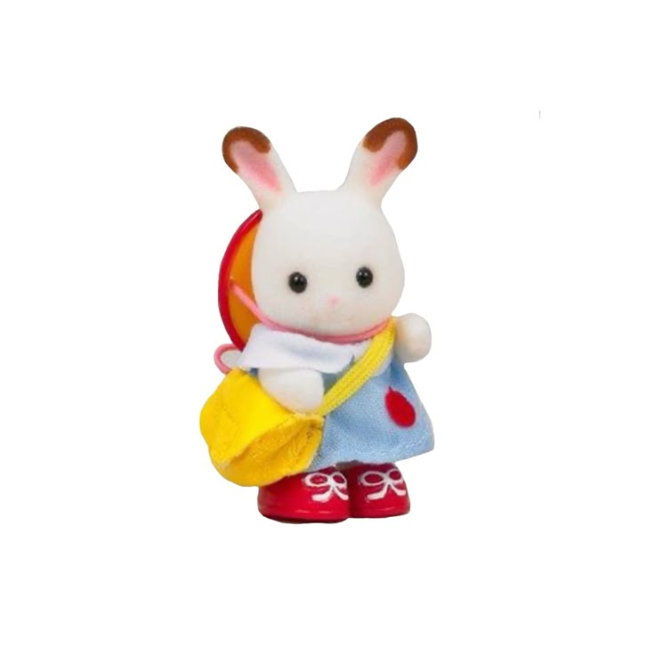
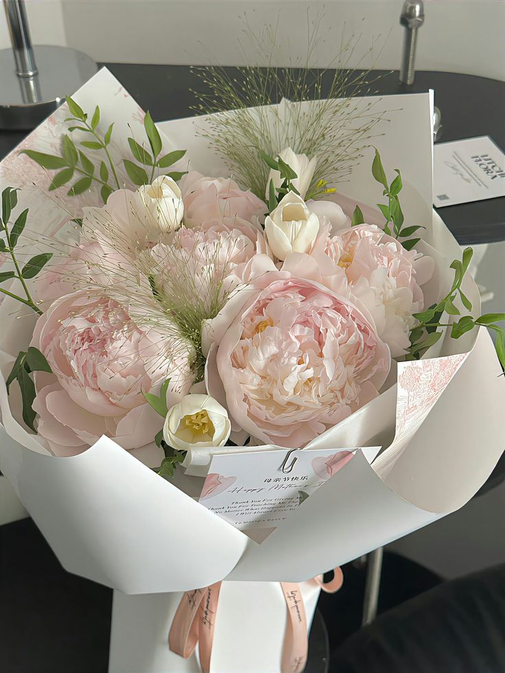
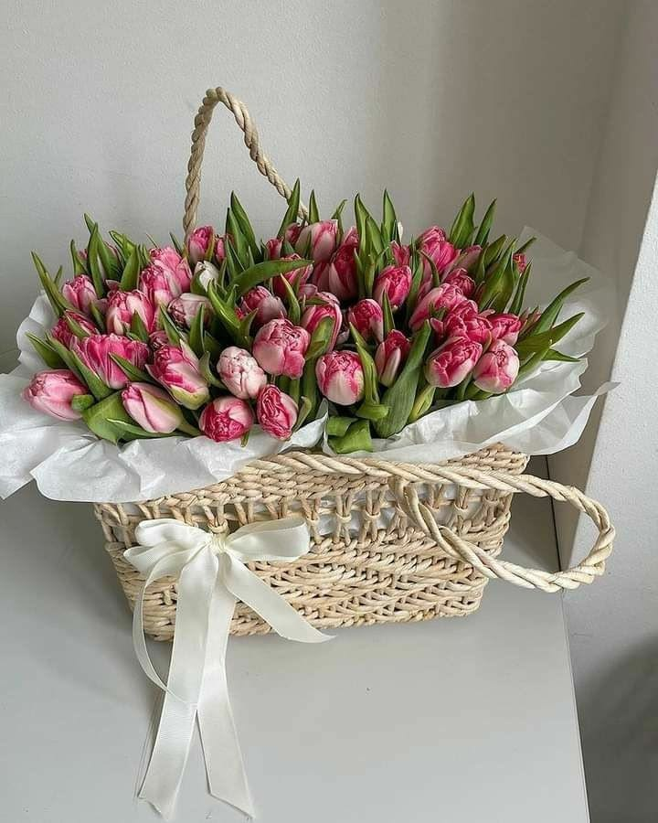
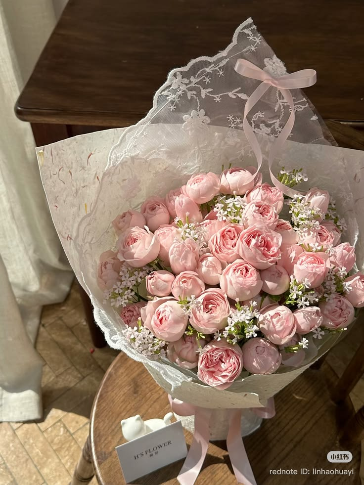
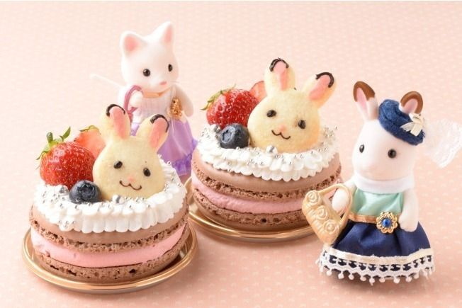
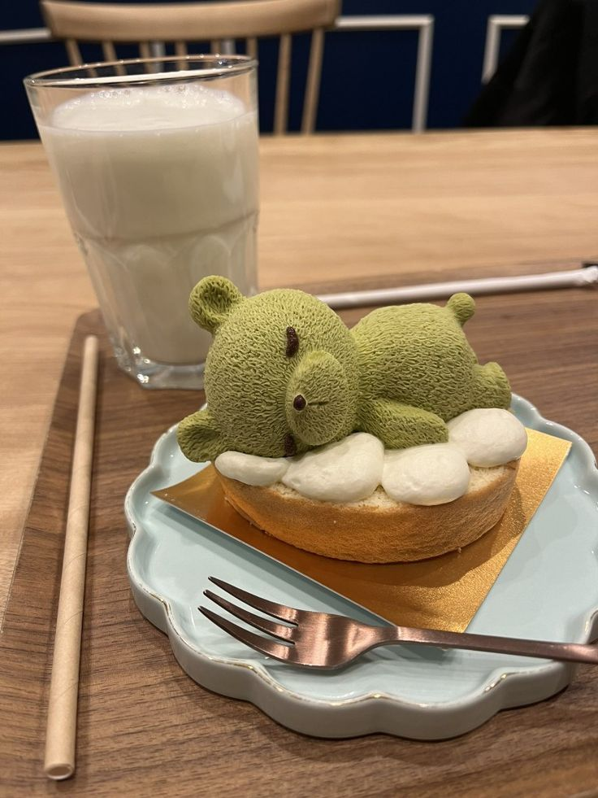
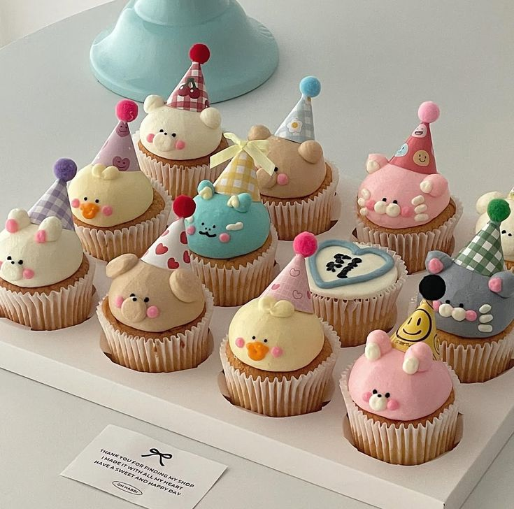
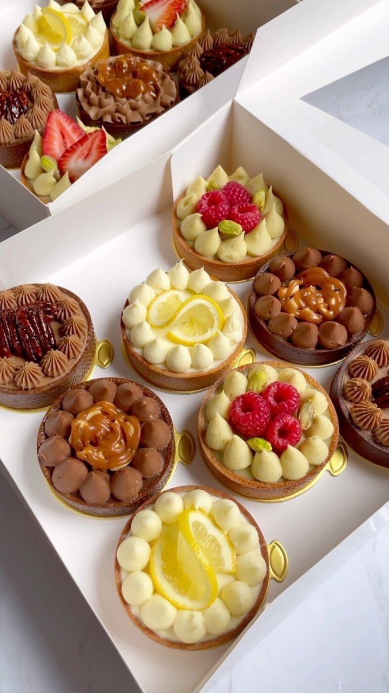

Pemilik Toko Bunga Impor &
Cafe Kue yang Menawan

Saya adalah seorang florist bersemangat dan pecinta kuliner manis. Dunia saya dipenuhi dengan warna-warni pastel yang lembut, wangi bunga segar, dan aroma kue yang baru matang.
Dengan pengalaman bertahun-tahun merangkai bunga dan menciptakan resep kue yang lucu, saya mendedikasikan diri untuk membawa kebahagiaan kecil melalui setiap karya yang saya buat, baik itu buket bunga impor yang elegan maupun kue-kue menggemaskan di cafe saya.
Menyediakan rangkaian bunga premium dari berbagai belahan dunia, dirangkai dengan penuh cinta untuk momen spesial Anda.

Koleksi peony impor dengan sentuhan warna ungu lembut yang romantis.

Rangkaian tulip putih dan biru muda langsung dari perkebunan Belanda.

Mawar kuning persik premium dengan paduan foliage eksotis.
Pengakuan atas dedikasi dalam seni merangkai bunga.
Penghargaan tingkat nasional untuk kategori inovasi desain buket pernikahan eksklusif dengan bunga langka.
Dipercaya merangkai lebih dari 500 buket bunga meja untuk acara kenegaraan tahun 2025.
Tempat di mana rasa manis bertemu dengan desain yang tak tertahankan. Setiap kue adalah karya seni kecil yang siap memanjakan lidah Anda.

Rasa vanilla & raspberry

Bentuk beruang menggemaskan

Frosting selembut awan

Segar dan manis ceria